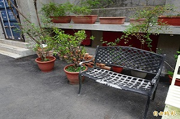
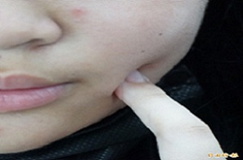
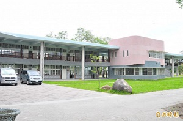
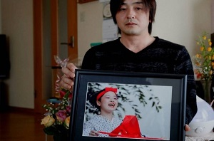
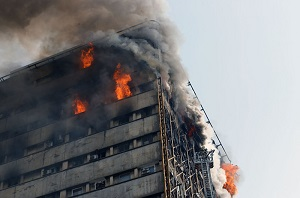

從小罹患自閉症、一０四年就讀台南市區一所國中的林姓男學生，常遭劉姓男同學辱罵腦殘、智障，一０五年初更遭劉生肢體霸凌，林逃躲廁所後，竟被劉拖回教室施暴，幸有老師察覺制止，避免傷害擴大。此事發生後，林生害怕上學，後來被學校課後社團菁英班刷下，還要長期接受心理治療，為此向劉生與家長求償二十萬元精神慰撫金。

新營一所私立高中發生高三學長惡整國中學弟逼吃屎的霸凌事件，兩人還是表兄弟關係，惡整影片並被放上網路，網友批說現在的屁孩真離譜。校方表示，事件在週二（18日）下午下課掃地時發生，放學後立即請來雙方家長到校，整人的高三學生當面向被整的表弟和家長道歉，表示做錯了，獲得諒解，學校輔導室也針對整人、被整學生、旁觀學生計5人進行輔導。

雲林一名國一女生為躲避同學霸凌，謊稱家裡是「黑道」，反被自以為是正義之士的學姐呼巴掌,雲林縣某國中傳出霸凌事件，一名常被同學拿身材言語霸凌的女生，為了自保，跟同學謊稱自己混黑道，但適得其反，一名三年級學姐聽到後把她叫出來，問她是否真的混黑道，並嗆要「撂人」輸贏，女學生當場道歉並否認混黑道，但學姐不信，還打了她一巴掌

花蓮中區某國中出現陳姓、林姓兩「校園小霸王」，下課時間揪其他男同學陪玩「互毆打架」遊戲，還說「不加入一起玩，就換我們打你！」同學迫於無奈只好加入遊戲，其中4人還因此打到身體瘀青，導致學生恐懼上學，家長今生氣地到學校要求校方處理，「讓2名男生轉學」！校方已成立校園霸凌調查委員會，並通報花蓮縣教育處、縣警局少年隊。

日本校園霸凌已成一大社會問題，據信不少學生因為親身經歷霸凌，或在網路、簡訊和部落格上遭受騷擾，最後以自殺結束生命。據統計，日本一年約有超過22萬起霸凌事件。當年一名13歲少年因遭到校園霸凌，結果於購物中心的廁所內上吊自盡。最新一起轟動事件發生於2016年10月，一名13歲少女因不堪同學霸凌，最後跳軌自殺。

台中市41歲魏姓男子不知哪根神經不對勁，去年12月26日晚上起，一夜之間其機車跑了近百公里，來回攜帶易燃液體，從南區美村路開始、再到彰化縣大村鄉、南區大勇街、大里區等四處，都是他高職同學及友人的住處放火，起因竟然是魏嫌要報復這些人在20幾年前對他冷嘲熱諷，檢察官說他犯罪動機令人匪夷所思，但事實明確，依殺人未遂罪起訴。